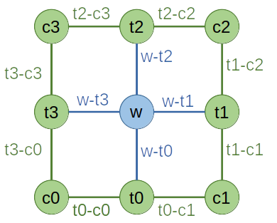

8.1. Network¶
The Network object provides a skeleton of a Tensor network diagram. Users can write a Network file, which serves as the blue print of a TN structure. With a Network defined in such a way, multiple Tensors can be contracted at once. The contraction order can either be specified or automatically optimized by Cytnx. Furthermore, the tensor network can be printed to check the implementation.
Network is useful when we have to contract different tensors with the same connectivity many times. We can define the Network once and reuse it for several contractions. The contraction order can be optimized once after the first initialization with tensors. In proceeding steps this optimized order can be reused.
8.1.1. Network from .net file¶
We take a typical contraction in a corner transfer matrix algorithm as an example. The TN diagram is given by:
{kind=link}
We implement the diagram as a .net file to represent the contraction task:
ctm.net:
1c0: t0-c0, t3-c0
2c1: t1-c1, t0-c1
3c2: t2-c2, t1-c2
4c3: t3-c3, t2-c3
5t0: t0-c1, w-t0, t0-c0
6t1: t1-c2, w-t1, t1-c1
7t2: t2-c3, w-t2, t2-c2
8t3: t3-c0, w-t3, t3-c3
9w: w-t0, w-t1, w-t2, w-t3
10TOUT:
11ORDER: ((((((((c0,t0),c1),t3),w),t1),c3),t2),c2)
Note that:
The labels above correspond to the diagram you draw, not the label attribute of UniTensor objects. Both label conventions can, but do not have to be the same.
Labels should be separated by ‘ , ‘. In TOUT, a ‘ ; ‘ separates the labels in rowspace and colspace.
TOUT specifies the output configuration, in this case we leave it blank since the result will be a scalar.
ORDER is optional and used to specify the contraction order manually.
8.1.2. Put UniTensors and Launch¶
We use the .net file to create a Network. Then, we can load instances of UniTensors:
In Python:
1# initialize tensors
2w = cytnx.UniTensor(cytnx.random.normal([2,2,2,2], mean=0., std=1.))
3c0 = cytnx.UniTensor(cytnx.random.normal([8,8], mean=0., std=1.))
4c1 = cytnx.UniTensor(cytnx.random.normal([8,8], mean=0., std=1.))
5c2 = cytnx.UniTensor(cytnx.random.normal([8,8], mean=0., std=1.))
6c3 = cytnx.UniTensor(cytnx.random.normal([8,8], mean=0., std=1.))
7t0 = cytnx.UniTensor(cytnx.random.normal([8,2,8], mean=0., std=1.))
8t1 = cytnx.UniTensor(cytnx.random.normal([8,2,8], mean=0., std=1.))
9t2 = cytnx.UniTensor(cytnx.random.normal([8,2,8], mean=0., std=1.))
10t3 = cytnx.UniTensor(cytnx.random.normal([8,2,8], mean=0., std=1.))
11
12# initialize network object from ctm.net file
13net = cytnx.Network("ctm.net")
14
15# put tensors
16net.PutUniTensor("w",w)
17net.PutUniTensor("c0",c0)
18net.PutUniTensor("c1",c1)
19net.PutUniTensor("c2",c2)
20net.PutUniTensor("c3",c3)
21net.PutUniTensor("t0",t0)
22net.PutUniTensor("t1",t1)
23net.PutUniTensor("t2",t2)
24net.PutUniTensor("t3",t3)
25
26print(net)
In C++:
1// initialize tensors
2w = cytnx.UniTensor(cytnx.random.normal({2,2,2,2}), 0., 1.);
3// and so on...
4
5// initialize network object from ctm.net file
6Network net = cytnx.Network("ctm.net");
7
8// put tensors
9net.PutUniTensor("c0", c0);
10net.PutUniTensor("t0", t0);
11net.PutUniTensor("c1", c1);
12// and so on...
13
14cout << net;
Output >>
==== Network ====
[o] c0 : t0-c0 t3-c0
[o] c1 : t1-c1 t0-c1
[o] c2 : t2-c2 t1-c2
[o] c3 : t3-c3 t2-c3
[o] t0 : t0-c1 w-t0 t0-c0
[o] t1 : t1-c2 w-t1 t1-c1
[o] t2 : t2-c3 w-t2 t2-c2
[o] t3 : t3-c0 w-t3 t3-c3
[o] w : w-t0 w-t1 w-t2 w-t3
TOUT : ;
ORDER : ((((((((c0,t0),c1),t3),w),t1),c3),t2),c2)
=================
To perform the contraction and get the outcome, we use the .Launch():
In Python:
1Res = net.Launch(optimal = True)
In C++:
1UniTensor Res = net.Launch(true)
Here if the argument optimal = True, the contraction order is always auto-optimized. If optimal = False, the specified ORDER in the .net file will be used. If ORDER is not specified, the order of the tensor definitions in the .net file is used.
Note
The auto-optimized contraction order obtained by calling .Launch(optimal = True) is saved in the Network object. If there is no need to re-optimize the order (i.e. the bond dimensions of the input tensors remain (approximately) the same.), we can put new tensors and call .Launch() again with optimal = False. In this case, the optimized order is reused, which avoids the overhead of recalculating the optimal order.
The indices of the UniTensors to be put into the Network need to be ordered according to the indices in the .net file. Otherwise, the index order can be defined in PutTensor explicitly, see PutUniTensor according to label ordering below.
8.1.3. Network from string¶
Alternatively, we can implement the contraction directly in the program with FromString():
In Python:
1net = cytnx.Network()
2net.FromString(["c0: t0-c0, t3-c0",\
3 "c1: t1-c1, t0-c1",\
4 "c2: t2-c2, t1-c2",\
5 "c3: t3-c3, t2-c3",\
6 "t0: t0-c1, w-t0, t0-c0",\
7 "t1: t1-c2, w-t1, t1-c1",\
8 "t2: t2-c3, w-t2, t2-c2",\
9 "t3: t3-c0, w-t3, t3-c3",\
10 "w: w-t0, w-t1, w-t2, w-t3",\
11 "TOUT:",\
12 "ORDER: ((((((((c0,t0),c1),t3),w),t1),c3),t2),c2)"])
This approach can be convenient if you do not want to maintain the .net files.
8.1.4. PutUniTensor according to label ordering¶
When we put a UniTensor into a Network, we can also specify its leg order by the bond labels in a UniTensor. This way, the user does not need to know or look up the order of the indices of the bonds. As an example, we consider two UniTensors A and B with three bonds each. Both tensors have one leg corresponding to physical degrees of freedom and the other two legs are internal indices of the Tensor Network. Tensors of this kind are used in matrix product states, and the internal indices point to the left or right in diagrams, while the physical index is oriented vertically. We first create such tensors and set the corresponding labels:
In Python:
1A = cytnx.UniTensor(cytnx.ones([2,8,8]));
2A.relabels_(["phy", "left", "right"])
3B = cytnx.UniTensor(cytnx.ones([2,8,8]));
4B.relabels_(["phy", "left", "right"])
The legs of these tensors are arranged such that the first leg is the physical leg (with dimension 2, corresponding to a spin-half chain) and the other two legs are the internal bonds (with bond dimension 8).
If we want to contract the physical legs of the two tensors, we can create the following Network:
In Python:
1net = cytnx.Network()
2net.FromString(["T0: v0in, phy, v0out",\
3 "T1: v1in, phy, v1out",\
4 "TOUT: v0in, v1in; v0out, v1out"])
Note that this Network uses the convention that the second legs of the tensors are contracted. This is not consistent with the index ordering of A and B, which have the physical leg in the first position. However, if we specify the labels when we put the tensors, we do not have to worry about the index order:
In Python:
1net.PutUniTensor("T0", A, ["left", "phy", "right"])
2net.PutUniTensor("T1", B, ["left", "phy", "right"])
3Tout=net.Launch()
4Tout.print_diagram()
Output >>
-----------------------
tensor Name :
tensor Rank : 4
block_form : False
is_diag : False
on device : cytnx device: CPU
---------
/ \
v0in ____| 8 8 |____ v0out
| |
v1in ____| 8 8 |____ v1out
\ /
---------
We added the bond labels as a third argument in PutUniTensor(). In this case, the indices will be permuted according to the label ordering of the Network.
Note that the names of tensors and indices can differ from the names and labels of the UniTensors, which makes it possible to flexibly reuse the Network for different tensor in consecutive contractions.